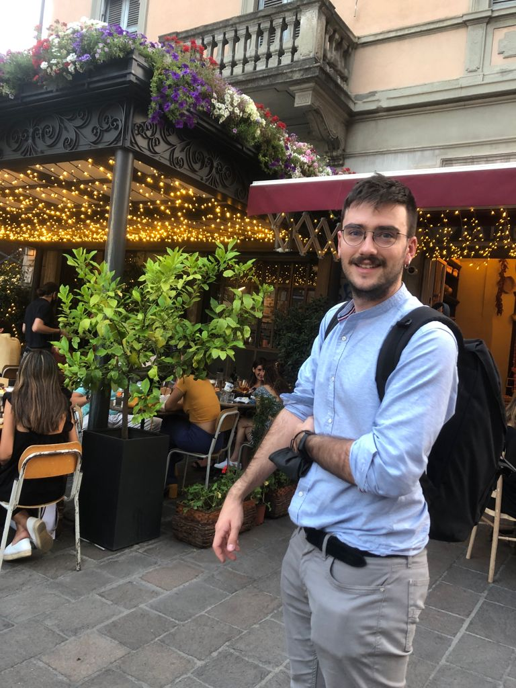
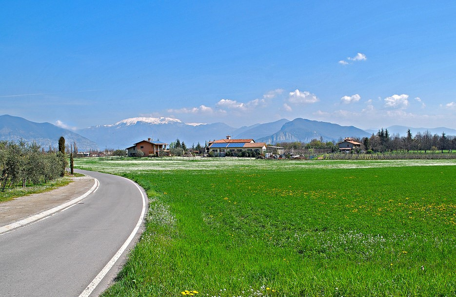

Professional Profile
With over 3 years of experience in industrial robotics, I specialize in the development and optimization of automated production cells. My expertise lies in Virtual Commissioning and Offline Programming, specifically using ABB RobotStudio.
I have a proven track record of reducing robot cycle times by 20% [cite: 15] and setup times by over 70% My international experience in the Netherlands [cite: 23, 24] and my background in Automation & Control Engineering from Politecnico di Milano allow me to tackle complex engineering challenges with a data-driven and innovative mindset[cite: 25, 35].
Download CV
Technical Expertise
Robotics & Software Core
My work focuses on ensuring an efficient transition from virtual simulation to real production environments through reachability studies, collision analysis, and feasibility validation[cite: 7, 14, 16]. I also develop custom engineering tools in Python and C# to automate simulation processes and signal analysis[cite: 8, 19].
- Robotics: ABB RobotStudio, RAPID, PickMaster Twin
- Languages: Python, C, C++, C#, MATLAB & Simulink
- Automation: PLC (Structured Text, Ladder), Codesys
- Tools: Visual Studio, Git, AutoCAD Inventor, SQL
A Symbiosis of Nature & Tech
Innovation with Purpose
Growing up in the heart of Italy's industrial hub, I developed a deep appreciation for the balance between technological progress and environmental respect. My experience in the offshore renewable energy sector [cite: 22] reinforced my commitment to using robotics as a tool for a sustainable future. I believe that precision in engineering is the first step toward reducing waste and optimizing global resources.

Get in Touch
Whether you are looking for technical collaboration, have questions about my feasibility studies, or simply want to discuss the future of industrial robotics, feel free to reach out. I am always open to new challenges and professional networking.
Send me an email